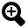

Application GBL.
Vous trouverez ici tout l'aide nécessaire pour utiliser l'application GBL.
Aide :
- : Bouton Home, il permet de revenir à la page d'accueil.
- : Bouton Imprimer, il permet d'imprimer la page courante.
- : Bouton Précèdent, il permet de retourner en arrière.
- : Bouton Suivant, il permet de passer à la page suivante.
- : Bouton Plein écran, il permet de passer l'application en plein écran. (Si vous réappuyer dessus vous revener à la taille normal de l'application)
-  : Bouton Zoomer, il permet de zoomer sur la page.
- : Bouton Dézoomer, il permet de dézoomer sur la page.
- : Bouton zoom initial, il permet d'annuler un zoom et de revenir au zoom initial.
- : Bouton Réglages, il permet de régler le serveur qui permet à l'application de fonctionner.
- : Bouton Eteindre, il permet de fermer l'application.
 : Bouton Aide, il permet d'ouvrir cette fenetre d'aide.
: Bouton Aide, il permet d'ouvrir cette fenetre d'aide. : Bouton Informations, il permet d'ouvrir une fenetre d'informations.
: Bouton Informations, il permet d'ouvrir une fenetre d'informations.
Clin Matthieu - Czekala Hugo - Koby Dylan - ERREUR 404 - Vecchio Quentin